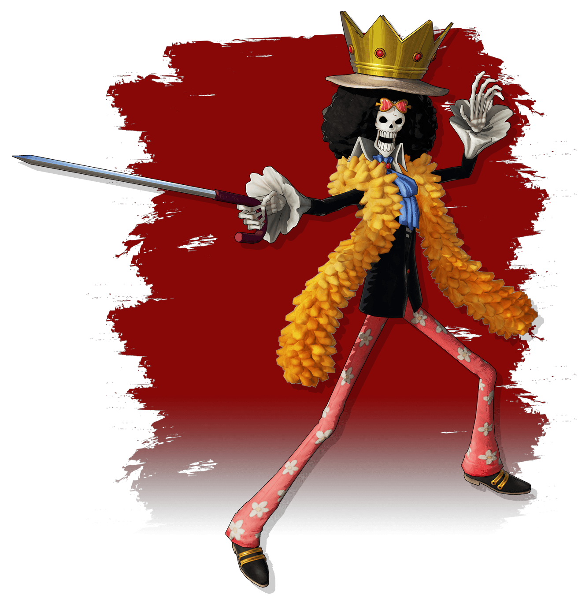

Recognized by his trademark straw hat given to him by Red-Haired Shanks at an early age, Luffy dreams of conquering The Grand Line to become the King of the Pirates—and he won't let ANYTHING stop him!
As he sails the vast seas, he adds new members to his gang of Straw Hat Pirates. Destination: The Grand Line! After all his adventures and battles against famous foes, he's a big-shot rookie with a 3 billion berry bounty on his head!
Luffy is a big eater who loves to feast. While his freewheeling nature may be vexing to some, he believes in himself and his trusted friends above all else!
Usopp longs to be a brave warrior of the sea like his father Yasopp, the sniper of the Red Hair Pirates. Having inherited Yasopp's sharpshooting talent, he serves the same role for the Straw Hats. Versed in lying and bluffing, he's prone to boasting, but this can help him in a fight. Deft of hand, Usopp is talented in crafting new tools and weapons. He was in charge of ship repairs until Franky joined.
Usopp has a pessimistic, cowardly personality. Dangerous adventures and powerful foes often get the better of him, but he summons all his courage to stand up once more and continue on the path of a true warrior of the sea!
Nami uses her vast knowledge of navigation and natural talent for reading the weather in order to steer the ship. The crew couldn't have gotten to where they are today without her! From an early age, Nami excelled in making nautical charts. Her dream was to create a map of the entire world. She came to hate pirates after a certain crew took over her hometown, but after Luffy saved her, she joined the Straw Hats.
Nami is arguably the most level-headed of the crew. Not only does she set the ship's course, she's the team mom who looks after the others. She's also very strict with money, and anyone who overspends in her presence will soon regret it.
Born and raised in Ohara, the land of archaeology, Robin is a gifted scholar who earned her degree at a young age. Her dream is to read the Rio Poneglyph and learn the world's true history.
Robin is the sole survivor of Ohara, destroyed by the government. The World Government labeled her the Demon of Ohara and tried to bring her in because she can read the forbidden ancient texts. In order to survive, Robin worked with many seedy organizations, none of whom she trusted...until the Straw Hat Pirates won her over and she decided to help them. As she journeys with the rest of Luffy's Crew, she continues to seek the lost truth of the past!
Musician and swordsman of the Straw Hat Pirates, also known as "Humming Swordsman Brook." As a musician, Brook has tremendous talents of playing instruments such as a violin and guitar. He was a guard captain in a kingdom in the West Blue before becoming a pirate. He died in combat, but having eaten the Revive-Revive Fruit, he came back as a skeleton. Brook had his shadow stolen by Moria, but he successfully took it back after meeting Luffy. He loves making bone-based puns.
Zoro is the first member of the Straw Hat Pirates and Luffy's most trusted swordsman.
When he was young, he learned sword skills alongside his friend and rival, Kuina. Sadly, she died in a tragic accident. Now Zoro works hard to keep his promise to her by becoming the world's greatest swordsman. To that end, he is endlessly dedicated to his training. He prefers a challenge and will gladly risk his life fighting the strongest possible opponent.
Loyal with a heart of gold, Zoro is a pillar of support who would do anything for his trusted friends. While he supports Captain Luffy from the sidelines, if push comes to shove, he's not afraid to show some tough love.
Formerly the assistant chef at the ocean-going Restaurant Baratie, Sanji has a foul mouth, but his cooking is first-rate. He dreams of finding the All Blue, a legendary ocean that contains seafood ingredients from all over the world.
As the resident chef, Sanji can cook everything from large feasts for big eaters like Luffy to more intricate dishes for the female crew members. He loves to learn about obscure ingredients and dishes, then master them to hone his skills. He's also a talented fighter using the kick-based combat he learned from his mentor, Red-Leg Zeff.
While Sanji is merciless against men, he has a deep weakness for women. His quick thinking and ingenuity has saved the crew countless times.
Chopper is a blue-nosed reindeer who gained human intelligence after eating a certain Devil Fruit. He was treated as a monster until Dr. Hililuk took him in. When the doctor passed away, Chopper decided he would work as a doctor himself. His dream is to become a "cure-all" doctor who can treat any sickness.
With his vast knowledge and expertise, he's an excellent ship doctor, but in combat he uses the power of his Devil Fruit so he can protect everyone like the man he is!
As expected of a former reindeer, he has a keen sense of smell and can talk to other animals.
Disciple to Tom, the legendary shipwright of Water Seven, Franky is the man who built the Straw Hats their new vessel, the Thousand Sunny. His dream is to craft the perfect boat and sail it to the end of the sea. He joined the Straw Hats in order to see just how far the Thousand Sunny would go. As the resident shipwright, Franky handles steering, repairs, and ship modifications. He also excels in developing weapons of all sizes. After receiving a grave injury in an accident, he learned to modify his own body. As such, this cyborg's body is riddled with different gadgets and weapons beyond human understanding.
A whale shark Fish-Man. Also known as "First Son of the Sea Jinbe." Formerly one of the Seven Warlords of the Sea. He uses both Fish-Man Karate and Fish-Man Jujutsu. When his homeland of Fish-Man Island was being attacked, Whitebeard protected it, for which Jinbe felt a great debt. When Ace was leading his own pirates and made an attack on Whitebeard, Jinbe was the one who fought him to a standstill.